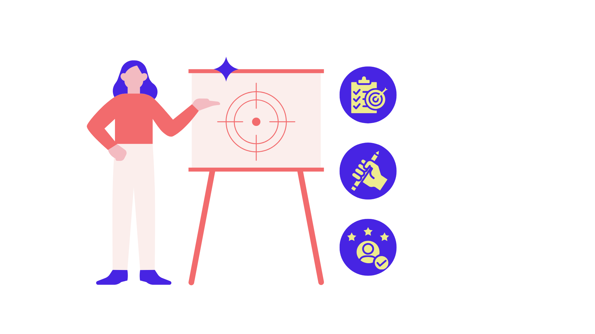
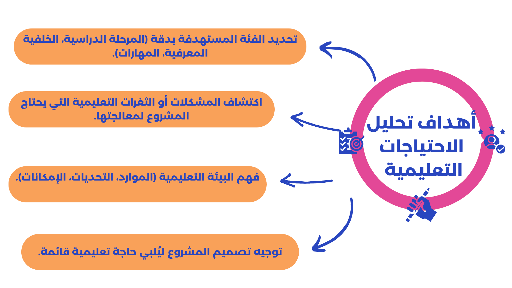

🔹 ما المقصود بتحليل الاحتياجات التعليمية؟
تحليل الاحتياجات هو الأساس الذي تُبنى عليه مخرجات التعلم المستهدفة. وفقاً لنموذج ADDIE، فإن مرحلة "Analysis" تتضمن فهم الفجوة بين الأداء الحالي والأداء المرغوب، كما أنها عملية منهجية تهدف إلى دراسة الفئة المستهدفة ومعرفة المشكلات التعليمية أو الفجوات المهارية والمعرفية، ويُعد تحليل الاحتياجات خطوة جوهرية في تخطيط مشروع التخرج، لأنها تُوفر أساسًا علميًا لتصميم المشروع ليكون ذا صلة واقعية وفعالية تربوية.
🔹 أهداف تحليل الاحتياجات:

🔹 خطوات تحليل الاحتياجات التعليمية:
1
تحديد الفئة المستهدفة
تحديد من هم المتعلمون (طلاب – معلمون – أولياء أمور...) لفهم خصائصهم.
2
جمع البيانات
استخدام أدوات مثل الاستبيانات والمقابلات والملاحظة للحصول على صورة دقيقة.
3
تحليل البيانات
اكتشاف الفجوات بين الأداء الحالي والمطلوب.
4
تحديد الأولويات
اختيار أهم الاحتياجات الواقعية التي يمكن للمشروع معالجتها.
5
صياغة المشكلة التعليمية
كتابة المشكلة بشكل واضح ومحدد لتكون منطلقًا للتصميم.